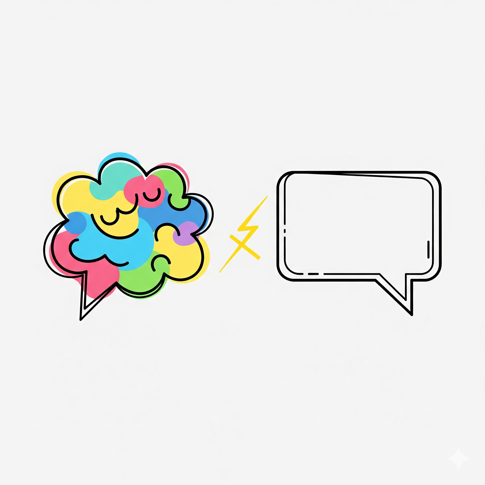

Welcome back to When AI Meets MBTI! So far in Parts 1–3, we’ve played three games: spotting personality in AI replies, guessing types without labels, and pushing GPT to cosplay as any MBTI you like. If you haven’t seen them, or you just want to know what is MBTI, click here. Now we turn aroud into another question: are humans happier chatting with AI that matches their own MBTI type, or one that’s their complementary opposite? In other words: do you want an AI therapist or an AI chaos twin? Let’s run a quick mini-survey and find out!
For this part of the series, I used ChatGPT-5 as the model. The “personality types” you’ll see are not real traits of the system, but styles that I prompted it to adopt (or that readers later interpreted). This is not a strict psychological study—it’s a playful survey and thought experiment
Experiment
The participants in this experiment are my three friends, whose MBTI types are ENTP, ENFJ, and ESTJ. I ask three questions that include three types:
- Daily topic: If you are very tired today and a friend still wants to drag you out, how would you respond?
- Values/preferences: What do you think is the most important thing in friendship?
- Fun challenge: If you could be any fictional character, who would you be and why?
Then I ask them: Which one would you like to continue the conversation with?
For privacy protection, I anonymized their information.

Prompt and response
Prompt: (we use ENTP as example here)
For each of the three questions below, give responses as: 1. ENTP 2. ENTP’s opposite personality (ISFJ)
Output in the following format:
ENTP: 1. [Answer to Q1] 2. [Answer to Q2] 3. [Answer to Q3]
ISFJ: 1. [Answer to Q1] 2. [Answer to Q2] 3. [Answer to Q3]
Questions: [showed as above]
Answers:
ENTP: 1. “Come on, let’s flip it—why don’t you come over here instead? We can turn my exhaustion into an experiment: how long does it take caffeine and good company to revive a half-dead human?”
2. “Spontaneity. A friend who’s always up for some crazy idea, no matter how impractical, is gold.”
3. “Tony Stark, hands down. He’s witty, inventive, always stirring things up, and somehow pulls brilliance out of chaos. Feels like home.”
ISFJ: 1. “I’d probably explain gently that I’m very tired today and can’t go out, but maybe we could plan something quieter or reschedule for another day.”
2. “Loyalty. Knowing someone will stand by you, not just in fun times but when life is difficult, is what really matters in friendship.”
3. “I’d be Samwise Gamgee. He’s selfless, steady, and always looks out for others. That’s the kind of character I admire and would want to embody.”
Click to view the full response here
ENFJ: 1. “I’d probably still consider going, because I don’t want to disappoint my friend. But if I’m really too tired, I’d suggest an alternative, like chatting on the phone or planning something meaningful tomorrow.” 2. “Mutual support. A true friendship is about being there for each other, encouraging growth, and celebrating successes together.” 3. “I’d be Professor X. He believes in people, brings out their best, and unites them for a greater purpose. That resonates with me.”
ISTP: 1. “If I’m tired, I’m not going. I’d just tell my friend straight up, ‘Not today, I need rest.’ No drama, just honesty.” 2. “Trust. I don’t need constant attention, but knowing I can rely on someone when it really counts—that’s what matters.” 3. “I’d be Han Solo. Independent, resourceful, good in a pinch, and prefers action over speeches. That fits me.”
⸻
ESTJ: 1. “If I’m exhausted and someone tries to drag me out, I’d be direct: ‘I’ve had a long day, I need to rest. Let’s schedule another time.’ Clear, firm, and no guilt.” 2. “In friendship, reliability is most important. If I can count on you and you can count on me, that’s the foundation of trust.” 3. “I’d be Captain America—principled, dependable, and always ready to take responsibility for the team.”
INFP: 1. “If I’m very tired but a friend insists, I’d gently explain: ‘I really want to see you, but I don’t have the energy tonight. Maybe we can do something low-key or catch up soon?’ Balancing honesty with kindness.” 2. “In friendship, authenticity matters most. I value people who are genuine, who let me be myself, and who share their true selves in return.” 3. “I’d be Luna Lovegood—unique, imaginative, and staying true to myself even if others don’t always understand me.”
⸻
Survey
Next, I presented the responses to my interviewees without disclosing which MBTI type had generated them, and asked which “person” they would prefer to continue conversing with. Their replies are shown below (note that in each case, the first response matches their own type, while the second comes from a different one).
- ENTP: I would choose the first one.
- ENFJ: I would prefer the first one.
- ESTJ: I would prefer the first one.
Reflection
Interesting, right? When people are asked to choose the friend they want, every one of them chooses the “typical” personality that contrasts with their own—no exceptions. How could this happen? Well, after doing some psycology “research”, I find 2 possible ways to explain this:
First, the complementarity theory1 in psychology suggests that people are often attracted to those who balance them out, which is aligned to our result in our small experiment with a large language model. Because the model has been trained on vast amounts of text and fine-tuned, it has the ability to capture how humans express emotions and convincingly act out different personality types. This imitation is so vivd that we would unconsciously project our real-life experienced persons, leading the complementary therory make effect.
Second, Jung’s idea, which is the basic of MBTI test, includes a professional word called “shadow”2. The “shadow” represents the hidden parts of our personality that we don’t usually show. When the language model recombines tokens into words that simulate these qualities, we feel a strange pull toward them. The text looks and sounds so human-like that in that moment, we are not just talking to an algorithm, but encountering a mirror of the side of ourselves we rarely acknowledge.That’s why the contrasting persona type draws us in: it offers what we lack and, in doing so, nudges our heart toward becoming more whole.
So let’s pause here on the psychology side. We’ve seen how the model can play out contrasting personalities and why people find them so appealing. But this naturally leads to a bigger question: how can an AI, built on nothing more than tokens and training data, manage to mimic personalities so well that we treat them like real people? That’s what we’ll dive into next.